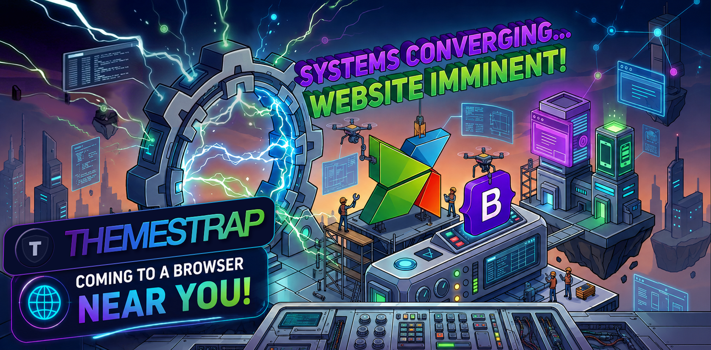

Basic Horizontal Slider
default_offset_pct: 0.5

<div data-plugin-beforeafter>
<img src="before.jpg" alt="Before">
<img src="after.jpg" alt="After">
</div>Drag the handle to compare…
Custom Offset & No Overlay Labels
default_offset_pct: 0.25 · no_overlay: true
<div data-plugin-beforeafter
data-plugin-options='{"default_offset_pct": 0.25, "no_overlay": true}'>
<img src="before.jpg" alt="Before">
<img src="after.jpg" alt="After">
</div>Slider starts at 25% — labels suppressed.
Custom Before / After Labels
before_label · after_label
data-plugin-options='{"before_label": "Original", "after_label": "Retouched"}'Labels read from
before_label / after_label options.
Vertical Orientation
orientation: 'vertical'
data-plugin-options='{"orientation": "vertical"}'
<!-- handle arrows flip to ↑ ↓; divider runs horizontal -->Drag vertically to split top / bottom.
Hover Tracking
move_slider_on_hover: true
data-plugin-options='{
"move_slider_on_hover": true,
"move_with_handle_only": false
}'
<!-- No click/drag needed — mouse position drives the divider -->Move your mouse over the image — no drag required.
Click-to-Move
click_to_move: true · move_with_handle_only: false
data-plugin-options='{
"click_to_move": true,
"move_with_handle_only": false
}'
<!-- Single click anywhere on the image jumps the divider -->Click anywhere on the image to reposition the divider.
Programmatic API
_setPosition · destroy · reinit
Position
Lifecycle
Current pct
0.5000
// Access instance
const ba = $('#ba-api').data('__beforeafter');
// Jump to any position (0.0 – 1.0)
ba._setPosition(0.25);
// Read current position
console.log(ba.pct); // 0.25
// Destroy (restores original markup)
ba.destroy();
// Reinit with new options
$('#ba-api').themestrapPluginBeforeAfter({ default_offset_pct: 0.75 });Use the controls to drive the API…